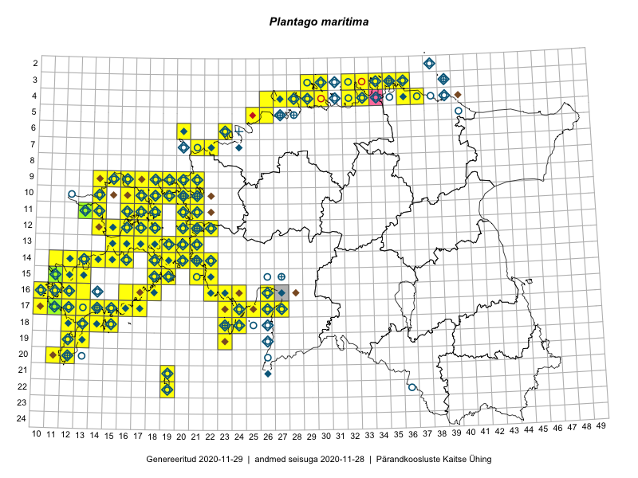

Plantago maritima
Uuendatud: 2016-12-07
Kaardile koondatud taksonid: Plantago maritima L.

Kaart põhineb 175 vaatlusel. Taime on leitud 99 ruudust.
| Ruut | Vaatleja(d) | Vaatlusaeg | Kirje tüüp | Viide andmebaasikirjele |
|---|---|---|---|---|
| 11-17 | Peedu Saar, Toomas Kukk | 2015-05-28 | ruut/ala | vaata PlutoFis |
| 09-15 | Peedu Saar, Toomas Kukk | 2015-05-27 | ruut/ala | vaata PlutoFis |
| 14-15 | Toomas Kukk, Eerik Leibak | 2015-08-09 | ruut/ala | vaata PlutoFis |
| 20-11 | Toomas Kukk, Peedu Saar | 2015-08-05 | ruut/ala | vaata PlutoFis |
| 17-14 | Toomas Kukk, Peedu Saar, Kersti Tambets, Sten Mander, Janika Sammasto | 2015-08-05 | ruut/ala | vaata PlutoFis |
| 10-17 | Toomas Kukk, Eerik Leibak | 2015-08-12 | ruut/ala | vaata PlutoFis |
| 09-17 | Toomas Kukk, Eerik Leibak | 2015-08-12 | ruut/ala | vaata PlutoFis |
| 09-14 | Toomas Kukk, Eerik Leibak | 2015-08-10 | ruut/ala | vaata PlutoFis |
| 13-15 | Toomas Kukk, Eerik Leibak | 2015-08-10 | ruut/ala | vaata PlutoFis |
| 10-16 | Peedu Saar, Toomas Kukk | 2015-05-26 | ruut/ala | vaata PlutoFis |
| 04-32 | Rein Kalamees, Kersti Püssa | 2015-08-31 | ruut/ala | vaata PlutoFis |
| 03-36 | Rein Kalamees, Kersti Püssa | 2015-09-02 | ruut/ala | vaata PlutoFis |
| 13-20 | Peedu Saar, Elle Roosaluste | 2015-07-12 | ruut/ala | vaata PlutoFis |
| 14-21 | Toomas Kukk, Peedu Saar | 2014-07-03 | ruut/ala | vaata PlutoFis |
| 09-15 | Toomas Kukk, Eerik Leibak | 2015-08-11 | ruut/ala | vaata PlutoFis |
| 04-30 | Rein Kalamees, Kersti Püssa | 2015-06-07 | ruut/ala | vaata PlutoFis |
| 16-10 | Toomas Kukk | 2014-06-21 | ruut/ala | vaata PlutoFis |
| 18-15 | Toomas Kukk | 2014-06-18 | ruut/ala | vaata PlutoFis |
| 03-35 | Rein Kalamees, Kersti Püssa | 2015-08-25 | ruut/ala | vaata PlutoFis |
| 03-34 | Rein Kalamees, Kersti Püssa | 2015-08-23 | ruut/ala | vaata PlutoFis |
| 04-37 | Rein Kalamees, Kersti Püssa | 2015-08-24 | ruut/ala | vaata PlutoFis |
| 12-21 | Tiit Hallikma, Toomas Kukk | 2015-08-27 | ruut/ala | vaata PlutoFis |
| 03-33 | Rein Kalamees, Kersti Püssa | 2015-05-15 | ruut/ala | vaata PlutoFis |
| 16-11 | Peedu Saar, Ott Luuk | 2015-10-14 | ruut/ala | vaata PlutoFis |
| 16-17 | Meeli Mesipuu, Kadri Tali | 2015-07-06 | ruut/ala | vaata PlutoFis |
| 16-18 | Meeli Mesipuu, Kadri Tali | 2015-07-06 | ruut/ala | vaata PlutoFis |
| 13-17 | Meeli Mesipuu, Kadri Tali | 2015-07-08 | ruut/ala | vaata PlutoFis |
| 14-16 | Meeli Mesipuu | 2015-07-10 | ruut/ala | vaata PlutoFis |
| 14-19 | Meeli Mesipuu | 2015-07-11 | ruut/ala | vaata PlutoFis |
| 13-20 | Meeli Mesipuu | 2015-07-13 | ruut/ala | vaata PlutoFis |
| 18-23 | Ott Luuk, Elle Roosaluste | 2015-05-29 | ruut/ala | vaata PlutoFis |
| 16-22 | Indrek Tammekänd, Vilma Kuusk | 2015-08-30 | ruut/ala | vaata PlutoFis |
| 17-25 | Ott Luuk, Eerik Leibak | 2015-05-21 | ruut/ala | vaata PlutoFis |
| 17-24 | Ott Luuk, Eerik Leibak | 2015-05-21 | ruut/ala | vaata PlutoFis |
| 15-22 | Vilma Kuusk, Indrek Tammekänd | 2015-06-30 | ruut/ala | vaata PlutoFis |
| 11-16 | Eeva-Maria Jeletsky, Tarmo Niitla | 2015-06-22 | ruut/ala | vaata PlutoFis |
| 11-17 | Eeva-Maria Jeletsky, Tarmo Niitla | 2015-06-20 | ruut/ala | vaata PlutoFis |
| 11-18 | Eeva-Maria Jeletsky, Tarmo Niitla | 2015-06-17 | ruut/ala | vaata PlutoFis |
| 12-14 | Eeva-Maria Jeletsky, Tarmo Niitla | 2015-06-25 | ruut/ala | vaata PlutoFis |
| 12-16 | Eeva-Maria Jeletsky, Tarmo Niitla | 2015-06-21 | ruut/ala | vaata PlutoFis |
| 12-17 | Eeva-Maria Jeletsky, Tarmo Niitla | 2015-06-21 | ruut/ala | vaata PlutoFis |
| 19-13 | Oliver Parrest | 2015-07-01 | ruut/ala | vaata PlutoFis |
| 16-24 | Maret Gerz, Leena Gerz | 2015-08-09 | ruut/ala | vaata PlutoFis |
| 16-11 | Mari Reitalu | 2015-05-22 | ruut/ala | vaata PlutoFis |
| 17-24 | Maret Gerz, Leena Gerz | 2015-08-12 | ruut/ala | vaata PlutoFis |
| 15-11 | Mari Reitalu | 2014-05-18 | ruut/ala | vaata PlutoFis |
| 20-11 | Mari Reitalu, Triin Reitalu | 2014-08-15 | ruut/ala | vaata PlutoFis |
| 14-19 | Meeli Mesipuu | 2015-06-20 | ruut/ala | vaata PlutoFis |
| 16-10 | Mari Reitalu, Oliver Parrest | 2015-08-04 | ruut/ala | vaata PlutoFis |
| 19-12 | Oliver Parrest | 2015-08-18 | ruut/ala | vaata PlutoFis |
| 14-20 | Meeli Mesipuu, Kadri Tali | 2015-06-26 | ruut/ala | vaata PlutoFis |
| 16-12 | Mari Reitalu, Triin Reitalu | 2015-08-18 | ruut/ala | vaata PlutoFis |
| 14-11 | Mari Reitalu, Oliver Parrest | 2015-07-14 | ruut/ala | vaata PlutoFis |
| 14-13 | Mari Reitalu, Oliver Parrest | 2015-07-24 | ruut/ala | vaata PlutoFis |
| 15-12 | Mari Reitalu, Oliver Parrest | 2015-07-14 | ruut/ala | vaata PlutoFis |
| 15-12 | Mari Reitalu, Oliver Parrest | 2015-07-21 | ruut/ala | vaata PlutoFis |
| 15-22 | Maret Gerz, Leena Gerz | 2015-08-15 | ruut/ala | vaata PlutoFis |
| 18-12 | Mari Reitalu, Sirje Azarov, Oliver Parrest | 2015-08-02 | ruut/ala | vaata PlutoFis |
| 17-10 | Mari Reitalu, Oliver Parrest | 2015-08-04 | ruut/ala | vaata PlutoFis |
| 16-26 | Indrek Tammekänd | 2015-05-11 | ruut/ala | vaata PlutoFis |
| 14-12 | Mari Reitalu, Oliver Parrest | 2015-07-21 | ruut/ala | vaata PlutoFis |
| 17-12 | Mari Reitalu, Triin Reitalu | 2015-07-22 | ruut/ala | vaata PlutoFis |
| 15-11 | Mari Reitalu, Oliver Parrest | 2015-07-16 | ruut/ala | vaata PlutoFis |
| 18-13 | Mari Reitalu, Oliver Parrest | 2015-05-27 | ruut/ala | vaata PlutoFis |
| 16-11 | Triin Reitalu, Mari Reitalu | 2015-08-09 | ruut/ala | vaata PlutoFis |
| 20-12 | Oliver Parrest | 2015-08-15 | ruut/ala | vaata PlutoFis |
| 16-22 | Maret Gerz, Leena Gerz | 2015-08-16 | ruut/ala | vaata PlutoFis |
| 17-11 | Mari Reitalu, Triin Reitalu | 2015-08-05 | ruut/ala | vaata PlutoFis |
| 16-10 | Sirje Azarov, Mari Reitalu | 2015-06-22 | ruut/ala | vaata PlutoFis |
| 16-11 | Sirje Azarov, Mari Reitalu | 2015-06-22 | ruut/ala | vaata PlutoFis |
| 16-11 | Sirje Azarov, Mari Reitalu | 2015-08-22 | ruut/ala | vaata PlutoFis |
| 16-13 | Sirje Azarov, Aira Alasi | 2015-07-20 | ruut/ala | vaata PlutoFis |
| 11-13 | Meeli Mesipuu, Timo Luhamäe | 2015-05-27 | ruut/ala | vaata PlutoFis |
| 17-16 | Sirje Azarov, Aira Alasi | 2015-08-12 | ruut/ala | vaata PlutoFis |
| 11-16 | Meeli Mesipuu, Timo Luhamäe | 2015-05-28 | ruut/ala | vaata PlutoFis |
| 12-16 | Meeli Mesipuu, Timo Luhamäe | 2015-05-28 | ruut/ala | vaata PlutoFis |
| 17-16 | Sirje Azarov, Aira Alasi | 2015-08-17 | ruut/ala | vaata PlutoFis |
| 18-15 | Mari Reitalu | 2014-07-17 | ruut/ala | vaata PlutoFis |
| 17-14 | Mari Reitalu | 2014-07-21 | ruut/ala | vaata PlutoFis |
| 15-18 | Karin Kikas, Elle Rajandu | 2015-07-24 | ruut/ala | vaata PlutoFis |
| 17-14 | Karin Kikas, Elle Rajandu | 2015-07-22 | ruut/ala | vaata PlutoFis |
| 05-25 | Mari Metsoja, Jaak-Albert Metsoja | 2015-05-30 | ruut/ala | vaata PlutoFis |
| 06-23 | Mari Metsoja, Jaak-Albert Metsoja, Ott Luuk | 2015-06-04 | ruut/ala | vaata PlutoFis |
| 13-20 | Kadri Tali | 2015-06-05 | ruut/ala | vaata PlutoFis |
| 13-18 | Hannes Pehlak | 2015-06-16 | ruut/ala | vaata PlutoFis |
| 13-19 | Kadri Tali | 2015-06-03 | ruut/ala | vaata PlutoFis |
| 10-20 | Ott Luuk, Peedu Saar | 2014-07-29 | ruut/ala | vaata PlutoFis |
| 13-21 | Ott Luuk, Maret Gerz | 2014-07-03 | ruut/ala | vaata PlutoFis |
| 19-12 | Ott Luuk, Mari Reitalu, Thea Kull | 2014-05-23 | ruut/ala | vaata PlutoFis |
| 09-18 | Ott Luuk, Toomas Kukk, Thea Kull, Peedu Saar | 2014-05-25 | ruut/ala | vaata PlutoFis |
| 11-21 | Hanna-Eliisa Luts, Tõnu Ploompuu | 2015-08-13 | ruut/ala | vaata PlutoFis |
| 10-20 | Tõnu Ploompuu, Anna-Grete Rebane, Hanna-Eliisa Luts | 2015-07-20 | ruut/ala | vaata PlutoFis |
| 16-11 | Mari Reitalu, Triin Reitalu | 2015-08-09 | ruut/ala | vaata PlutoFis |
| 11-20 | Hanna-Eliisa Luts, Tõnu Ploompuu | 2015-08-13 | ruut/ala | vaata PlutoFis |
| 09-16 | Toomas Kukk, Peedu Saar | 2016-05-08 | ruut/ala | vaata PlutoFis |
| 12-14 | Toomas Kukk, Peedu Saar | 2016-05-07 | ruut/ala | vaata PlutoFis |
| 10-19 | Toomas Kukk, Peedu Saar | 2016-05-12 | ruut/ala | vaata PlutoFis |
| 10-20 | Toomas Kukk, Peedu Saar | 2016-05-12 | ruut/ala | vaata PlutoFis |
| 04-26 | Peedu Saar, Thea Kull | 2016-05-25 | ruut/ala | vaata PlutoFis |
| 04-27 | Toomas Kukk | 2016-05-25 | ruut/ala | vaata PlutoFis |
| 10-21 | Tõnu Ploompuu | 2015-08-21 | ruut/ala | vaata PlutoFis |
| 15-19 | Mari Reitalu, Triin Reitalu | 2016-06-30 | ruut/ala | vaata PlutoFis |
| 10-18 | Eeva-Maria Jeletsky, Tarmo Niitla | 2016-07-14 | ruut/ala | vaata PlutoFis |
| 10-18 | Sander Laherand, Toomas Kukk | 2016-07-07 | ruut/ala | vaata PlutoFis |
| 14-21 | Mari Reitalu, Oliver Parrest | 2016-07-04 | ruut/ala | vaata PlutoFis |
| 14-22 | Mari Reitalu, Oliver Parrest | 2016-07-04 | ruut/ala | vaata PlutoFis |
| 04-30 | Sander Laherand, Eerik Leibak | 2016-07-29 | ruut/ala | vaata PlutoFis |
| 14-21 | Erkki Otsman, Sergei Smirnov | 2016-06-24 | ruut/ala | vaata PlutoFis |
| 12-17 | Thea Kull, Sander Laherand | 2016-08-11 | ruut/ala | vaata PlutoFis |
| 11-13 | Thea Kull, Peedu Saar | 2016-08-10 | ruut/ala | vaata PlutoFis |
| 17-14 | Toomas Kukk, Meeli Mesipuu, Johannes Kõdar | 2016-08-11 | ruut/ala | vaata PlutoFis |
| 14-14 | Peedu Saar, Maret Gerz | 2016-08-12 | ruut/ala | vaata PlutoFis |
| 12-16 | Sander Laherand, Thea Kull, Nele Jõessar | 2016-08-11 | ruut/ala | vaata PlutoFis |
| 10-14 | Sander Laherand, Toomas Kukk, Nele Jõessar | 2016-08-09 | ruut/ala | vaata PlutoFis |
| 14-15 | Peedu Saar, Maret Gerz | 2016-08-11 | ruut/ala | vaata PlutoFis |
| 11-18 | Sander Laherand, Peedu Saar, Nele Jõessar | 2016-08-08 | ruut/ala | vaata PlutoFis |
| 11-20 | Aat Sarv, Maret Gerz | 2016-07-07 | ruut/ala | vaata PlutoFis |
| 11-14 | Peedu Saar, Thea Kull | 2016-08-09 | ruut/ala | vaata PlutoFis |
| 22-43 | Peedu Saar, Thea Kull | 2016-08-04 | ruut/ala | vaata PlutoFis |
| 11-17 | Maret Gerz, Meeli Mesipuu | 2016-08-08 | ruut/ala | vaata PlutoFis |
| 13-15 | Maret Gerz, Peedu Saar | 2016-08-11 | ruut/ala | vaata PlutoFis |
| 18-23 | Karin Kaljund, Kaire Lanno, Indrek Melts | 2016-07-27 | ruut/ala | vaata PlutoFis |
| 18-24 | Karin Kaljund, Kaire Lanno, Indrek Melts | 2016-07-26 | ruut/ala | vaata PlutoFis |
| 19-23 | Karin Kaljund, Kaire Lanno, Indrek Melts | 2016-07-28 | ruut/ala | vaata PlutoFis |
| 11-16 | Toomas Kukk, Thea Kull | 2016-08-08 | ruut/ala | vaata PlutoFis |
| 12-15 | Toomas Kukk, Meeli Mesipuu | 2016-08-10 | ruut/ala | vaata PlutoFis |
| 12-14 | Toomas Kukk, Meeli Mesipuu | 2016-08-10 | ruut/ala | vaata PlutoFis |
| 17-17 | Toomas Kukk, Meeli Mesipuu | 2016-08-12 | ruut/ala | vaata PlutoFis |
| 17-16 | Toomas Kukk, Meeli Mesipuu | 2016-08-12 | ruut/ala | vaata PlutoFis |
| 21-19 | Meeli Mesipuu, Ott Luuk | 2016-09-10 | ruut/ala | vaata PlutoFis |
| 22-19 | Ott Luuk, Meeli Mesipuu | 2016-09-10 | ruut/ala | vaata PlutoFis |
| 04-29 | Sander Laherand, Tõnu Ploompuu, Nele Jõessar | 2016-07-25 | ruut/ala | vaata PlutoFis |
| 12-20 | Rein Kalamees, Liina Oja | 2016-07-08 | ruut/ala | vaata PlutoFis |
| 14-14 | Mari Reitalu, Sirje Azarov | 2016-07-26 | ruut/ala | vaata PlutoFis |
| 14-18 | Mari Reitalu, Sirje Azarov | 2016-08-09 | ruut/ala | vaata PlutoFis |
| 14-19 | Mari Reitalu, Sirje Azarov | 2016-08-18 | ruut/ala | vaata PlutoFis |
| 14-20 | Mari Reitalu, Sirje Azarov | 2016-08-17 | ruut/ala | vaata PlutoFis |
| 15-18 | Mari Reitalu, Hannes Pehlak | 2016-08-26 | ruut/ala | vaata PlutoFis |
| 16-18 | Mari Reitalu, Sirje Azarov | 2016-08-08 | ruut/ala | vaata PlutoFis |
| 18-13 | Mari Reitalu, Sirje Azarov | 2016-07-31 | ruut/ala | vaata PlutoFis |
| 18-24 | Peedu Saar, Ott Luuk | 2016-09-21 | ruut/ala | vaata PlutoFis |
| 20-11 | Meeli Mesipuu | 2016-09-25 | ruut/ala | vaata PlutoFis |
| 18-15 | Peedu Saar | 2016-08-30 | ruut/ala | vaata PlutoFis |
| 17-24 | Tiit Hallikma, Tõnu Ploompuu | 2016-07-06 | ruut/ala | vaata PlutoFis |
| 17-25 | Tiit Hallikma, Tõnu Ploompuu | 2016-07-06 | ruut/ala | vaata PlutoFis |
| 17-17 | Peedu Saar, Ott Luuk | 2016-08-30 | ruut/ala | vaata PlutoFis |
| 13-16 | Peedu Saar, Ott Luuk | 2016-08-31 | ruut/ala | vaata PlutoFis |
| 16-17 | Peedu Saar, Ott Luuk | 2016-09-01 | ruut/ala | vaata PlutoFis |
| 18-23 | Ott Luuk, Peedu Saar | 2016-09-21 | ruut/ala | vaata PlutoFis |
| 09-18 | Ott Luuk, Meeli Mesipuu | 2016-09-16 | ruut/ala | vaata PlutoFis |
| 10-19 | Ott Luuk, Meeli Mesipuu | 2016-09-15 | ruut/ala | vaata PlutoFis |
| 04-32 | Peedu Saar, Timo Luhamäe | 2016-07-26 | ruut/ala | vaata PlutoFis |
| 03-33 | Peedu Saar, Timo Luhamäe | 2016-07-26 | ruut/ala | vaata PlutoFis |
| 18-14 | Ott Luuk | 2016-08-30 | ruut/ala | vaata PlutoFis |
| 15-12 | Toomas Kukk, Meeli Mesipuu | 2016-10-08 | ruut/ala | vaata PlutoFis |
| 18-12 | Toomas Kukk, Meeli Mesipuu, Mari Reitalu | 2016-10-07 | ruut/ala | vaata PlutoFis |
| 14-13 | Toomas Kukk, Meeli Mesipuu, Mari Reitalu | 2016-10-06 | ruut/ala | vaata PlutoFis |
| 19-13 | Meeli Mesipuu | 2016-06-30 | ruut/ala | vaata PlutoFis |
| 14-19 | Meeli Mesipuu | 2016-06-29 | ruut/ala | vaata PlutoFis |
| 16-22 | Peedu Saar, Timo Luhamäe, Johannes Kõdar | 2016-07-04 | ruut/ala | vaata PlutoFis |
| 14-16 | Ott Luuk, Peedu Saar | 2016-08-31 | ruut/ala | vaata PlutoFis |
| 10-20 | Peedu Saar, Timo Luhamäe | 2016-07-07 | ruut/ala | vaata PlutoFis |
| 09-20 | Peedu Saar, Timo Luhamäe | 2016-07-07 | ruut/ala | vaata PlutoFis |
| 03-29 | Kadi-Liis Kesler | 2015-07-20 | ruut/ala | vaata PlutoFis |
| 03-30 | Kadi-Liis Kesler | 2015-07-20 | ruut/ala | vaata PlutoFis |
| 07-21 | Meeli Mesipuu | 2016-07-07 | ruut/ala | vaata PlutoFis |
| 09-19 | Meeli Mesipuu, Ott Luuk | 2016-09-16 | ruut/ala | vaata PlutoFis |
| 17-15 | Meeli Mesipuu, Toomas Kukk, Johannes Kõdar | 2016-08-11 | ruut/ala | vaata PlutoFis |
| 10-16 | Meeli Mesipuu, Maret Gerz | 2016-08-09 | ruut/ala | vaata PlutoFis |
| 09-14 | Meeli Mesipuu, Maret Gerz | 2016-08-09 | ruut/ala | vaata PlutoFis |
| 03-35 | Ott Luuk, Sander Laherand, Nele Jõessar | 2016-07-26 | ruut/ala | vaata PlutoFis |
| 12-20 | Meeli Mesipuu, Maret Gerz | 2015-08-25 | ruut/ala | vaata PlutoFis |
| 06-20 | Jaak-Albert Metsoja, Mari Metsoja | 2016-06-30 | ruut/ala | vaata PlutoFis |
| 03-34 | Hannes Pehlak, Toomas Kukk | 2016-07-26 | ruut/ala | vaata PlutoFis |
| 07-22 | Marju Erit | 2015-05-01 | ruut/ala | vaata PlutoFis |